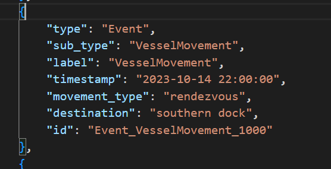
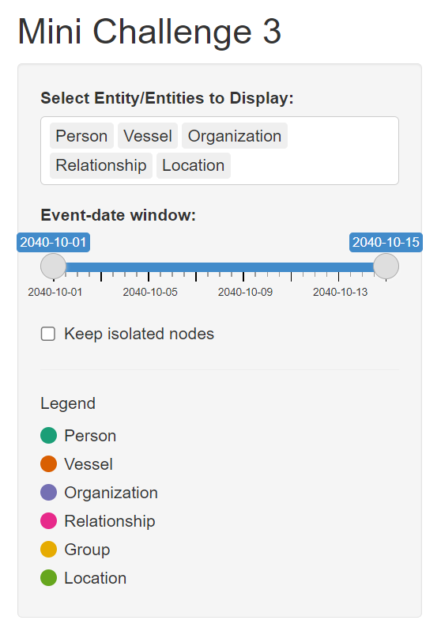
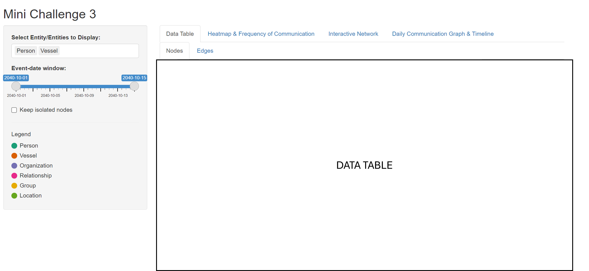
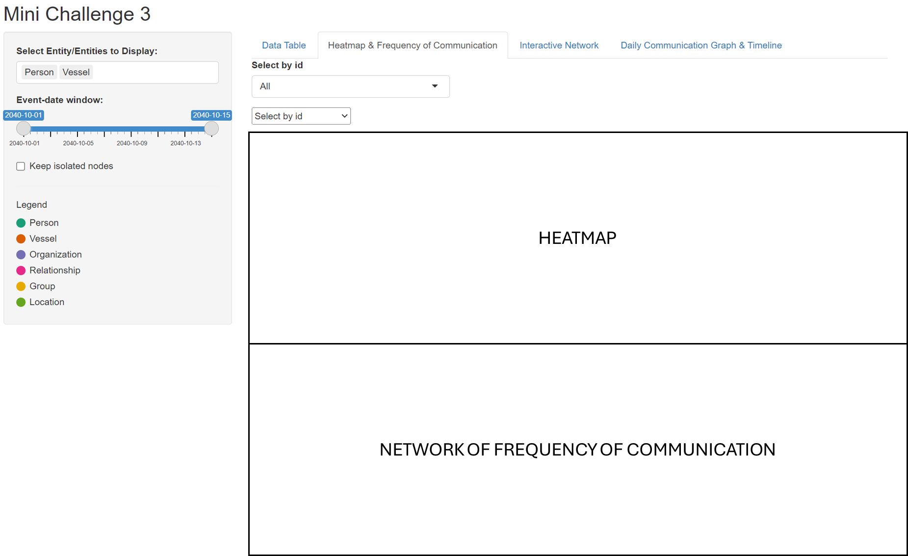
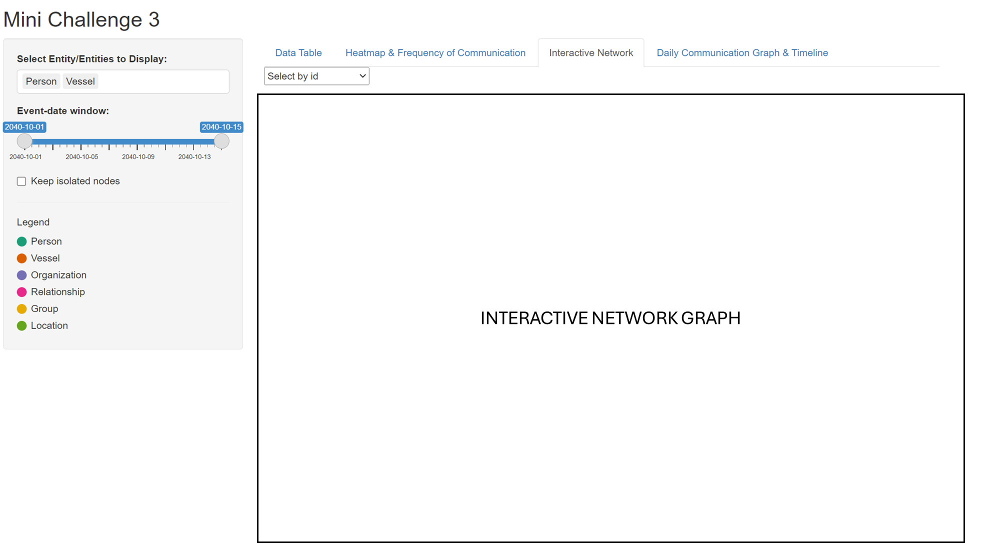
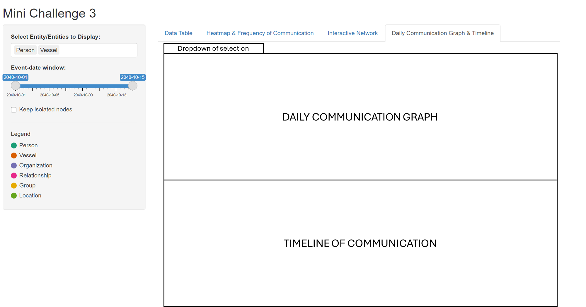

Take-Home_Ex03 - Storyboard
Introduction
This storyboard will contain the tasks and questions from VAST Challenge and Mini Challenge 3. The visualisations will help to answer questions from MC3.
Our storyboard helps break down Oceanus’s complex story into clear, visual scenes that are easy to follow. It allows viewers to understand key events, characters, and conflicts without being overwhelmed by information.
The story begins with Oceanus shifting from a fishing-based economy to tourism after illegal fishing crackdowns. Tensions grow as former players reinvest and power dynamics shift, reaching a peak when pop star Sailor Shift arrives to film a music video.
Our focus is on investigative journalist Clepper Jessen, who uncovers suspicious activity behind the sudden closure of Nemo Reef. By tracking intercepted communications—radio chatter, messages, and secret meetings—Clepper pieces together a web of rushed permits, hidden deals, and corruption.
The storyboard will follow these communications closely, helping the audience connect the dots as the deeper story unfolds.
Motivation
In order to find more detailed insights, communication visualizations as well as other types of visualizations will be used to help Clepper to uncover and confirm his suspicions based on the analysis that we will be doing to identify important events and relationships between the people, organizations and vessels in the 2 week period.
With the use of the storyboard, user would be able to visualize the analysis more effectively with the data set provided within the 2 weeks. Based on the communications, user can focus on the content as well as identify who are the suspicious players that play a part in the illegal fishing activities.
Methodology
The storyboard aims to showcase my team’s ideas on how to show and map out the user’s experience.
The prototype can be broadly classify into 3 key areas:
Heat Map Analysis
Network Graph Communication Analysis
Timeline Analysis
For enhanced user experience, the prototype will include filter components (i.e. parameter selections such as entities that we would want to select) as well as timeline slider bar that shows us the time period of events that the user would like to focus on. A legend is also shown to allow user to be identify clearly on the different types of nodes displayed on the plots.
Storyboard
1. Importing Libraries
All these libraries will be used to build the Shiny website.
shiny - Build and serve interactive web apps entirely in R
jsonlite - Read, write and manipulate JSON data quickly
dplyr - Filter, mutate and summarise
purr - For elegant list/vector iteration
visnetwork - create interactive network graphs
DT - Render Interactive Data Tables
tidygraph - Tidy-style verbs for graph data (nodes/edges) manipulation
ggraph - graphics plotting for network/graph objects
patchwork - combine ggplots
grid - low level graphics system underpinning lattice, ggplot
ggplot2 - build layered graphics
library(shiny)
library(jsonlite)
library(dplyr)
library(purrr)
library(visNetwork)
library(DT)
library(tidygraph)
library(ggraph)
library(patchwork)
library(grid)
library(ggplot2)2. Creating Legend
Give a legend to the different nodes
legend_cols <- c(
Person = "#1b9e77",
Vessel = "#d95f02",
Organization = "#7570b3",
Relationship = "#e7298a",
Group = "#e6ab02",
Location = "#66a61e"
)3. Load and Process Data
read_json - reads the json files
simplifyVector = TRUE - ensure the nested arrays become data frames called graph$nodes and graph$edges
events_df - keeps only nodes where type == Event and timestamp is not missing
filter - to keep only dates from 2040-10-01 to 2040-10-15 (this is due to an error in the data where there is a year 2023, while all other data are from year 2040)

nodes_all - used to create a new column category where type == Relationship and to label as “Relationship” and to only keep nodes that are in the legend category
edges_all - rename source and target to “from” and “to” and adds a fixed “to” arrow direction for plotting the visnetwork
A new column event_date is also created
graph <- read_json("Data/MC3_graph.json", simplifyVector = TRUE)
events_df <- graph$nodes %>%
filter(type == "Event", !is.na(timestamp)) %>%
mutate(date = as.Date(timestamp)) %>%
filter(date >= as.Date("2040-10-01"), date <= as.Date("2040-10-15"))
min_date <- min(events_df$date)
max_date <- max(events_df$date)
nodes_all <- graph$nodes %>%
mutate(category = if_else(type == "Relationship", "Relationship", sub_type)) %>%
filter(category %in% names(legend_cols)) %>%
mutate(color = legend_cols[category])
edges_all <- graph$edges %>%
transmute(from = source,
to = target,
type = type, # 'sent', 'received', etc.
arrows = "to") %>%
left_join(events_df %>% select(id, date), by = c("from" = "id")) %>%
rename(date_from = date) %>%
left_join(events_df %>% select(id, date), by = c("to" = "id")) %>%
rename(date_to = date) %>%
mutate(event_date = coalesce(date_from, date_to)) %>%
select(-date_from, -date_to)4. UI Design
sidebarLayout - Used to create the controls for the display on the right
selectInput - Used to select which Entities to display
sliderInput - Used to change the date of event
checkboxInput - For removing isolated nodes
mainPanel - Used to create the visualisation for the UI
tabPanel - To create the different tabs to switch between visualisations
ui <- fluidPage(
titlePanel("MC3 Entity & Relationship Network"),
sidebarLayout(
sidebarPanel(
selectInput("classes", "Select Entity/Entities to Display:",
choices = names(legend_cols),
selected = c("Person", "Vessel"),
multiple = TRUE),
sliderInput("dateRange", "Event-date window:",
min = min_date, max = max_date,
value = c(min_date, max_date),
timeFormat = "%Y-%m-%d"),
checkboxInput("isolates", "Keep isolated nodes", FALSE),
tags$hr(), tags$h5("Legend"),
## dynamic legend based on legend_cols -------------------------
tagList(lapply(names(legend_cols), function(cat) {
tags$div(style="display:flex; align-items:center; margin-bottom:4px;",
tags$span(style=sprintf(
"display:inline-block;width:14px;height:14px;border-radius:50%%;\
background:%s;margin-right:6px;", legend_cols[cat])),
tags$span(cat)
)
})),
width = 3
),
mainPanel(
tabsetPanel(id = "tabs",
tabPanel("Data Table",
tabsetPanel(type = "tabs",
tabPanel("Nodes", DTOutput("nodes_table_dt")),
tabPanel("Edges", DTOutput("edges_table_dt"))
)
),
tabPanel("Heatmap & Frequency of Communication",
selectInput("focus_id", "Select by id",
choices = "All", selected = "All"),
visNetworkOutput("pv_net", height = "700px")
),
# visNetwork
tabPanel("Interactive Network",
visNetworkOutput("net", height = "800px"), br(),
tabsetPanel(type = "tabs",
tabPanel("Nodes", DTOutput("nodes_table")),
tabPanel("Edges", DTOutput("edges_table"))
)
),
# original daily plot
tabPanel("Daily Communication Graph & Timeline",
plotOutput("dailyPlot")
)
)
)
)
)
This sidebar layout enables the user to filter out specific entities and their dates so that user is able to zoom in and focus on the details of the interaction and relationship between the entities.
5. Final Visualisations
1st Tab - Data Table
Overview of Nodes and Edges
This Data Table gives an overview of the nodes and edges that we are able to use for the visualisations in the other tabs.

2nd Tab - Heatmap & Frequency of Communication
The heatmap is able to find out the pattern and frequency of communication between the entities.

3rd Tab - Creating the Interactive Network
The user will be able to select the Entity/Entities and find out the relationship.
The use is also able to toggle the date to narrow down which dates they would like to view.
There is also a drop-down if they would like to Narrow down to specific person/relationship.
This network graph will help to figure out the relationship between each person/vessel/organisation/group.

4th Tab - Daily Communication Graph and Timeline of conversation
This daily communication graph allows the user to filter the communication for the day and who frequently communicates, narrowing down the groups of people that are associated with each other.

Conclusion
Overall, the aim of the article is to showcase the initial idea in the development of the Shiny Application that we are planning to build to answer the questions in Mini Challenge 3. This is to allow users with different needs to use this application to filter out relevant necessary information to find out the people who are involved in the illegal activities on Nemo Reef.
Additionally, with the various filters for entities and relationship, it allows the user to narrow down the suspects before zooming in onto the activities and communication that the specific entities are involved in. The user will then be able to manipulate and evaluate the results based on the information extracted.